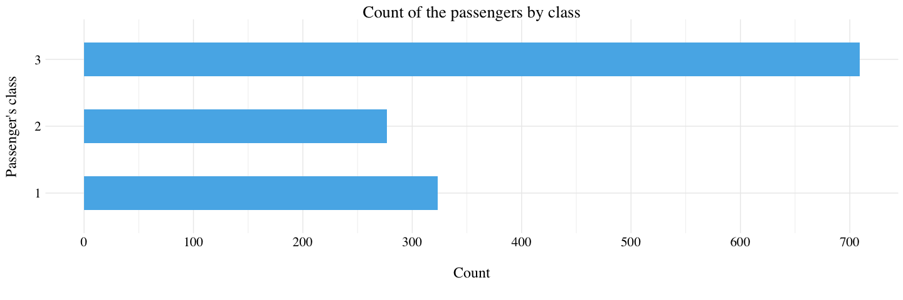
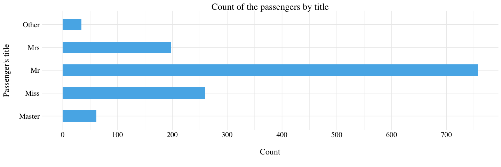
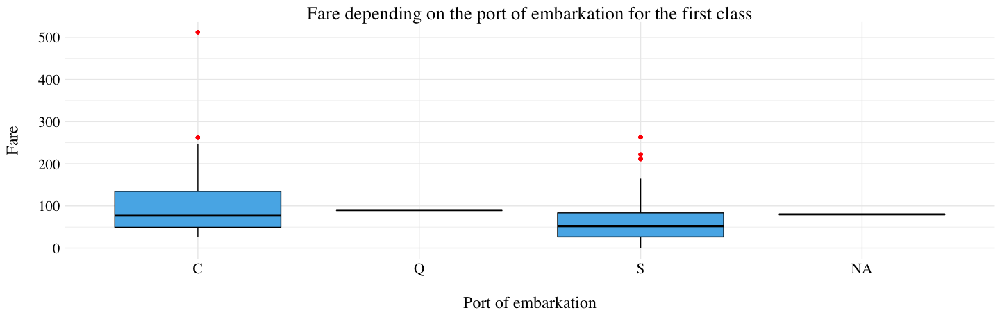
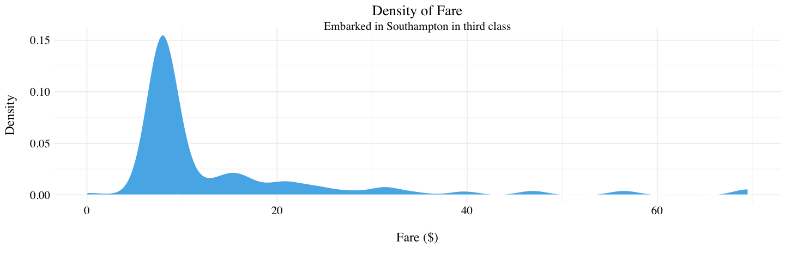
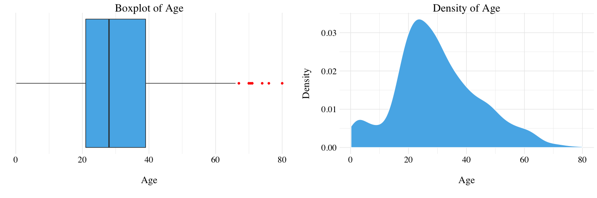
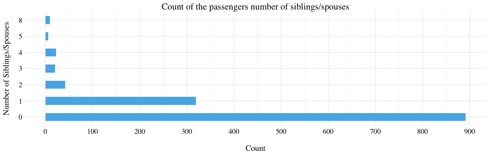
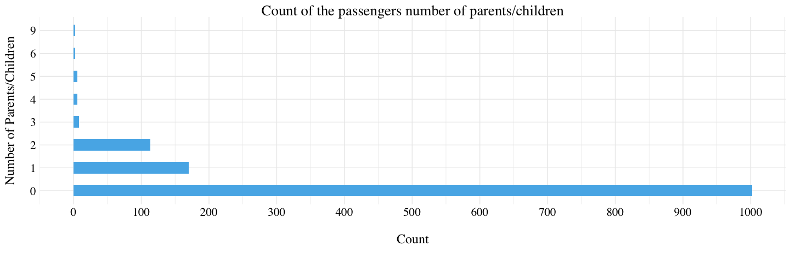

Titanic: Machine Learning from Disaster

Context
The sinking of the RMS Titanic is one of the most infamous shipwrecks in history. On April 15, 1912, during her maiden voyage, the Titanic sank after colliding with an iceberg, killing 1502 out of 2224 passengers and crew. This sensational tragedy shocked the international community and led to better safety regulations for ships.
One of the reasons that the shipwreck led to such loss of life was that there were not enough lifeboats for the passengers and crew. Although there was some element of luck involved in surviving the sinking, some groups of people were more likely to survive than others, such as women, children, and the upper-class.
Variables description
| Variable Name | Description |
|---|---|
| PassengerId | Passenger’s Id |
| Survived | Survived (1) or died (0) |
| Pclass | Passenger’s class |
| Name | Passenger’s name |
| Sex | Passenger’s sex |
| Age | Passenger’s age |
| SibSp | Number of siblings/spouses aboard |
| Parch | Number of parents/children aboard |
| Ticket | Ticket number |
| Fare | Passenger Fare |
| Cabin | Cabin |
| Embarked | Port of embarkation (C = Cherbourg; Q = Queenstown; S = Southampton) |
SPECIAL NOTES:
Pclass is a proxy for socio-economic status (SES): 1st ~ Upper; 2nd ~ Middle; 3rd ~ Lower.
Age is in Years; fractional if Age is less than One (1). If the Age is estimated, it is in the form xx.5.
With respect to the family relation variables (i.e. sibsp and parch) some relations were ignored. The following are the definitions used for sibsp and parch:
- Sibling: Brother, Sister, Stepbrother, or Stepsister of Passenger Aboard Titanic;
- Spouse: Husband or Wife of Passenger Aboard Titanic (Mistresses and Fiances Ignored);
- Parent: Mother or Father of Passenger Aboard Titanic;
- Child: Son, Daughter, Stepson, or Stepdaughter of Passenger Aboard Titanic.
Other family relatives excluded from this study include cousins, nephews/nieces, aunts/uncles, and in-laws. Some children travelled only with a nanny, therefore parch = 0 for them. As well, some travelled with very close friends or neighbors in a village, however, the definitions do not support such relations.
Load the data
train <- read_csv('train.csv')
test <- read_csv('test.csv')
titanic <- train %>%
bind_rows(test) %>%
select(-PassengerId) %>%
mutate_at(vars(Pclass, Sex, Embarked), funs(factor(.)))
The train dataset has 891 observations and 12 variables. The test
dataset has 418 observations and 11 variables. We want to use the
train dataset to learn if a passenger survived given the different
variables, and then predict the fate of the passenger into the test
dataset.
Exploratory Data Analysis
Passenger’s class
There is no missing values into the PClass variable. Half of the passenger are in the third class.

Passenger’s sex
There is almost twice men than women.

Passenger’s name
This variable, obviously, confirm the high number of men compare to the
number of women. But it carry another piece of information: more than
the half of the women on the Titanic are not married (the Miss
factor). It is probably due to the children.
# Extract the title from the Passenger's name.
Title <- "^.*, (.*?)\\..*$" %>%
gsub("\\1", titanic$Name)
# Create another factors for low represented title.
title_high <- c('Mr', 'Miss', 'Mrs', 'Master')
Title <- Title %in% title_high %>%
if_else(Title, 'Other')
# Add titlecolumn to the dataframe
titanic <- titanic %>%
add_column(Title) %>%
mutate_at(vars(Title), funs(factor(.)))

Passenger’s port of embarkation
1 % of the passengers embarked in Southampton. We do not known the port of embarkation for only 2 persons. So, we will try to infer these missing values.
First, let’s take a look at the 2 passengers with missing port of embarkation.
| Survived | Pclass | Name | Sex | Age | SibSp | Parch | Ticket | Fare | Cabin | Embarked | Title |
|---|---|---|---|---|---|---|---|---|---|---|---|
| 1 | 1 | Icard, Miss. Amelie | female | 38 | 0 | 0 | 113572 | 80 | B28 | NA | Miss |
| 1 | 1 | Stone, Mrs. George Nelson (Martha Evelyn) | female | 62 | 0 | 0 | 113572 | 80 | B28 | NA | Mrs |
Miss. Icard and Mrs. Stone paid 80$ and was in first class. Let’s plot a boxplot to determine the median fare depending on the port of embarkation for the first class.

There are only 3 passengers that embarked in Queenstown in first class. There fare was 90$. Moreover, they were part of the same family. So, considering the boxplot, we might think that the port of embarkation of Miss. Icard and Mrs. Stone were Cherbourg.
titanic[62, "Embarked"] <- "C"
titanic[830, "Embarked"] <- "C"

Passenger’s fare
There is only 1 person with a missing in the all dataset. The mean fare is 33$ and the median fare 14$ for a ticket on the Titanic. Let’s look at the person with a missing fare.
| Survived | Pclass | Name | Sex | Age | SibSp | Parch | Ticket | Fare | Cabin | Embarked | Title |
|---|---|---|---|---|---|---|---|---|---|---|---|
| NA | 3 | Storey, Mr. Thomas | male | 60.5 | 0 | 0 | 3701 | NA | NA | S | Mr |
Let’s plot a kernel density estimator of the fare for the person with the same characteristics than Mr. Storey (embarked in Southampton in third class).

The median for the third class and the embarkment in Southampton is 8$. So, we might think that Mr. Storey has paid the median fare of the people from the third class who embarked in Southampton.
titanic[1044, "Fare"] <- titanic %>% filter(Embarked == 'S', Pclass == 3) %>% pull(Fare) %>% median(na.rm = TRUE)
Passenger’s age
There are 263 persons without Age in the dataset. The mean age is 29.9 years old.

Since there are a lot of missing values, we are going to input these ones using a ridge regression ( glmnet_ package ).
# Split the dataset into the ones with Age and the ones without Age.
titanic.with.age <- titanic %>%
filter(!is.na(Age)) %>%
select(-c(Survived, Name, Ticket, Cabin))
titanic.without.age <- titanic %>%
filter(is.na(Age)) %>%
select(-c(Survived, Name, Ticket, Cabin)) %>%
mutate(Age = 0)
# Build a model matrix of the data
titanic.lm <- lm(Age ~ ., data = titanic.with.age)
titanic.with.age.model.matrix <- model.matrix(titanic.lm, data = titanic.with.age)[,-1]
# Perform the Ridge Regression (alpha = 0)
titanic.age.model <- glmnet(titanic.with.age.model.matrix, titanic.with.age$Age, alpha = 0)
# Prediction of the Age
titanic.without.age$Age <- predict(titanic.age.model,
newx = model.matrix(titanic.lm, data = titanic.without.age)[, -1],
s = cv.glmnet(titanic.with.age.model.matrix, titanic.with.age$Age, alpha = 0)$lambda.min,
type = 'link')
# Replace the missing Age into the all dataset
titanic[is.na(titanic$Age), "Age"] <- titanic.without.age$Age
Let’s check the new density estimator for the Age to ensure that things still look good. (Careful, one person with a predicted negative age!)
Number of siblings/spouses aboard
There is no missing value for the variable SipSp in the dataset. A majority if the passengers does not have siblings or spouses aboard.

Number of parents/children aboard
There is no missing value for the variable Parch in the dataset. A majority if the passengers does not have parents or children aboard.

Passenger’s cabin
There are 1014 missing values for the Cabin variable. So, 77% of the observations are missing. We decided to delete this features from the dataset.
titanic <- titanic %>% select(-Cabin)
Passenger’s ticket
There are 0 missing values for the Ticket variable. But, there are 929 different values. Thus, we also delete this feature from the dataset because almost every passenger has a different Ticket.
titanic <- titanic %>% select(-Ticket)
Prediction of the survivors
train <- titanic %>% select(-Name) %>% filter(!is.na(Survived))
test <- titanic %>% select(-Name) %>% filter(is.na(Survived))
# Split the train set into two dataset (for validation)
set.seed(42)
sample <- sample(c(TRUE, FALSE), nrow(train), replace = TRUE, prob = c(2/3, 1/3))
train.val <- train[sample, ]
test.val <- train[!sample, ]
# Perform Ridge regression
train.lm <- lm(Survived ~ ., data = train.val)
X <- model.matrix(train.lm, data = train.val)[ , -1]
Y <- train.val$Survived
train.ridge.model <- glmnet(X, Y, alpha = 0, family = 'binomial')
# Prediction on the test.val set
test.val.predict <- predict(train.ridge.model,
s = cv.glmnet(X, Y, alpha = 0)$lambda.min,
newx = model.matrix(train.lm, data = test.val)[ , -1],
type = 'class')
On the validation set, there are 0.14% of missclassified passengers.
# Prediction of the test set
test$Survived <- 0
test.predict <- predict(train.ridge.model,
s = cv.glmnet(X, Y, alpha = 0)$lambda.min,
newx = model.matrix(train.lm, data = test)[ , -1],
type = 'class')
# Construt the dataframe
result <- data.frame(PassengerID = row.names(test.predict),
Survived = test.predict[ , 1])
# Export as CSV
write.csv(result, 'results.csv', row.names = FALSE)
Steven Golovkine
PhD student
My research interests include functional data analysis, non-parametric statistics and machine learning.